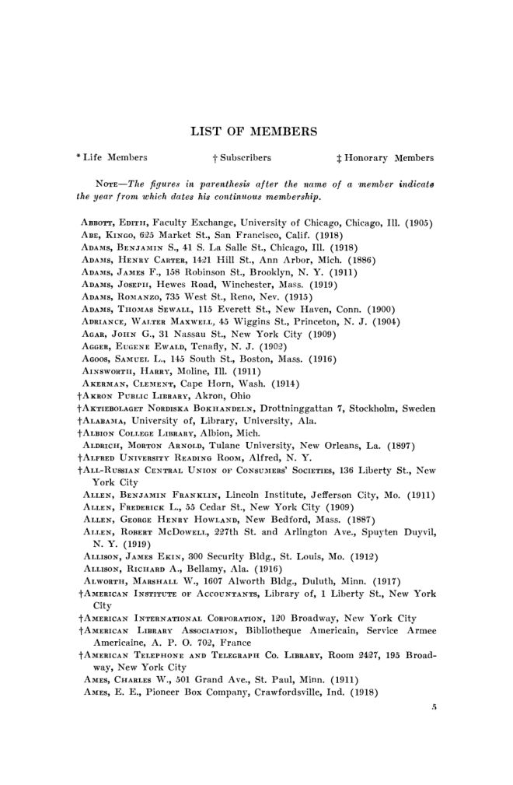

Manual de 1919: a lista de sócios depois da guerra
Leitura: 5 min
O manual de 1919 mantém o estatuto de 1911 e a anuidade de cinco dólares, anuncia a reunião de Chicago e mostra, no índice geográfico, o mapa de sócios redesenhado pela guerra.


A lista de sócios de 1919 começa, como nos manuais de 1914 e 1916, por Edith Abbott, da University of Chicago, sócia desde 1905. Termina agora em H. E. Zitkowski, da American Beet Sugar Co., em Rocky Ford, no Colorado, sócio desde 1917. Entre os dois nomes cabem 62 páginas, das 5 às 66, nove a mais que no manual de 1916.
O Handbook of the American Economic Association de 1919 saiu como suplemento do nº 3 do vol. 9 da American Economic Review, com data de setembro na capa, impresso pela Princeton University Press. O sumário mantém as partes do manual de 1916, comentado no nº 142: propósitos da associação, estatuto, lista de sócios e assinantes e índice geográfico. O escritório de publicação continua em Princeton, Nova Jersey, e as assinaturas seguem a cargo de Ithaca, Nova York.
O que mudou desde 1916?
A apresentação repete os parágrafos de 1916, com três atualizações. Os assinantes, que eram mais de trezentos, passam a ser cerca de quatrocentos e cinquenta, entre eles as bibliotecas mais importantes do país. A reunião anual de 1919 é anunciada para Chicago, em Illinois, nas festas de fim de ano; a de 1916 fora marcada para Columbus. E a Review, que tinha menos de seis anos, agora tem menos de dez e, diz o texto, já ocupa lugar entre as revistas científicas sérias do país.
“Pessoas de todos os matizes de opinião econômica estão entre seus sócios.” (“Persons of all shades of economic opinion are found among its members”)
O estatuto é o mesmo revisto na reunião anual de dezembro de 1911. Os objetivos seguem sendo o estímulo à pesquisa econômica, em especial ao estudo histórico e estatístico das condições reais da vida industrial, as publicações e a plena liberdade de discussão, sem posição partidária. A apresentação lembra que, salvo o editor da Review, os dirigentes não são remunerados e que toda a receita vai para as publicações e as reuniões anuais.
Como a guerra aparece no índice geográfico?
O índice ocupa 44 páginas, das 67 às 110, ante 38 em 1916. A primeira parte vai do Alabama ao Wyoming, com o Distrito de Colúmbia e o Havaí, e segue pelas cidades canadenses, de Brandon a Woodstock. Em Ottawa aparecem o Departamento do Trabalho e a Biblioteca do Parlamento; em Montreal, Stephen Leacock e a biblioteca da McGill University.
Na segunda parte, outros países, o mapa é o do pós-guerra. Áustria, Baviera, Hungria e Rússia, que tinham seção em 1916, não aparecem mais. A Alemanha, que reunia entradas em Berlim, Dresden, Frankfurt, Hamburgo e Leipzig, fica com uma só: G. Cohn, em Göttingen. Surgem seções para Pérsia, Portugal, Straits Settlements e Tasmânia, e a América do Sul ganha um grupo próprio, com Assunção, Buenos Aires, Cuzco, Lima, Rio de Janeiro e Santiago.
Em Cambridge seguem J. N. Keynes, Alfred Marshall e A. C. Pigou; em Oxford, Edwin Cannan e F. Y. Edgeworth; em Paris, Charles Gide; em Genebra, William E. Rappard e E. G. Balch. O Japão continua a ter uma das seções mais extensas fora da América do Norte: Tóquio reúne a Associação de Banqueiros, escolas superiores de comércio, universidades, a Biblioteca Imperial e empresas como a Mitsubishi. Na China há entradas em Cantão, Pequim, Xangai e Tianjin; na Índia, de Allahabad a Trivandrum.
O que a lista de sócios registra?
O formato é o de 1916: sinais para sócios vitalícios, assinantes e honorários e, entre parênteses, o ano desde o qual a filiação é contínua. Andrew Carnegie, de Nova York, aparece com o sinal de vitalício e filiação desde 1886; Henry Carter Adams, de Ann Arbor, também traz o ano de 1886. Logo abaixo de Carnegie vêm cinco bibliotecas com seu nome, em Allegheny, Atlanta, San Antonio, Pittsburgh e Kokomo. Como nos anos anteriores, o manual não traz um total de sócios.
Na minha leitura
Na minha leitura, o manual de 1919 registra duas coisas distintas. O estatuto, a anuidade e o formato das listas não mudaram desde 1911, sinal de uma instituição que já tinha encontrado seu desenho. O que mudou foi o tamanho e a geografia: mais páginas de sócios, mais assinantes e um índice de outros países que perde a Europa Central e a Rússia e ganha a América do Sul e novas entradas na Ásia. Para quem estuda a formação da profissão, essas listas são uma das poucas medidas diretas de onde a economia acadêmica americana era lida, e de como um choque externo alterou esse alcance em três anos.
Glossário
- Assinante (subscriber)
- instituição ou pessoa que recebe as publicações sem ser sócia, como as bibliotecas.
- Índice geográfico
- relação dos sócios e assinantes organizada por lugar de residência, e não por ordem alfabética.
- Sócio vitalício (life member)
- quem paga uma contribuição única e fica isento das anuidades.
- Straits Settlements
- colônia britânica na península malaia, com sede em Singapura.
Documentos, periódicos e notas (4)
- Purposes of the American Economic Association — texto institucional (pp. 1–2). Repete a apresentação de 1916, agora com cerca de quatrocentos e cinquenta assinantes, a reunião de 1919 marcada para Chicago e a Review descrita como revista de menos de dez anos. JSTOR
- Constitution of the American Economic Association — texto revisto na reunião anual de dezembro de 1911 (pp. 3–4). Mesmo estatuto de 1916: anuidade de cinco dólares, contribuição vitalícia de cem, até 25 sócios honorários estrangeiros e editor-gerente com mandato de três anos. JSTOR
- List of Members (pp. 5–66). Relação alfabética de sócios e assinantes, de Edith Abbott a H. E. Zitkowski, com endereços, sinais para vitalícios, assinantes e honorários e o ano de início da filiação contínua. JSTOR
- Geographical Index of Members and Subscribers (pp. 67–110). Os mesmos nomes agrupados por estado e cidade nos Estados Unidos e no Canadá e, depois, por país, da América Central à Tasmânia. JSTOR
Fontes
- Purposes of the American Economic Association (pp. 1–2). JSTOR · Internet Archive (PDF)
- Constitution of the American Economic Association (pp. 3–4). JSTOR · Internet Archive (PDF)
- List of Members (pp. 5–66). JSTOR · Internet Archive (PDF)
- Geographical Index of Members and Subscribers (pp. 67–110). JSTOR · Internet Archive (PDF)
- Sumário da edição no JSTOR: The American Economic Review, vol. 9, nº 3 (suplemento).
Documento em domínio público (EUA, publicado antes de 1931), via JSTOR Early Journal Content e Internet Archive. Resumo e comentário do autor deste site, sem afiliação com a American Economic Association. Encontrou um erro? Escreva: a correção é publicada no próprio texto, com data.
← Nº 159 · Tarifa por peça, monopólio e a pergunta: dividendo em ações é renda? Nº 161 · Seguro estatal, salário mínimo e a conta da guerra →